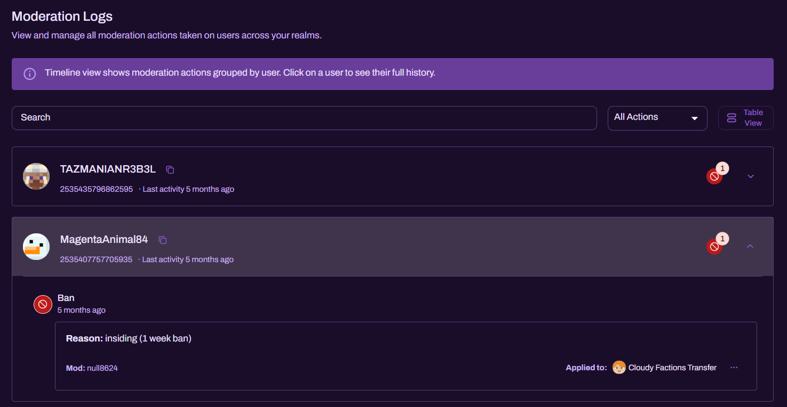

Moderation Logs

The Moderation Logs page provides an auditable record of moderation actions taken across your connected realms. It is designed for transparency, staff accountability, and quick investigation of repeat offenders.

What You Can Do Here
Track actions across realms
Moderation Logs consolidate actions taken through Realm Bot, including:
- bans
- kicks
- warnings (if enabled in your configuration)
- unbans and other reversal actions (where applicable)
Each event is stored with enough context to understand:
- what happened
- who performed the action
- when it happened
- which realm the action applied to
Timeline View
By default, Moderation Logs use a timeline view that groups actions by user.
-
Each user row shows:
- gamertag / identity
- a unique identifier (e.g., XUID where available)
- last activity timestamp
- a count indicator for logged actions
-
Expand a user to view their full action history, including:
- action type (e.g., Ban)
- date/time of the action
- moderator responsible
- reason text (if provided)
- realm the action was applied to
Tip: Timeline view is ideal when you are investigating a player’s pattern of behaviour.
Search & Filtering
Search
Use the Search bar to locate a player quickly. This is the fastest way to:
- find a specific user
- confirm whether prior action has been taken
- review previous reasons and outcomes
Action Filter
Use the All Actions dropdown to filter by action type. This is useful for:
- reviewing bans issued over a time period
- auditing kick usage by staff
- isolating warning activity if your server uses it heavily
Table View
You can switch to Table View to see a more structured, list-based layout.
Table View is useful when you need:
- a quick scan of recent actions
- a clean view for moderation review sessions
- faster comparisons across multiple users/actions
Best Practices
- Require reasons for major actions. A consistent reason standard improves future moderation decisions and appeals.
- Review logs routinely. Weekly checks help catch misuse or inconsistencies early.
- Use logs for escalation. A repeat pattern visible in the timeline is often the clearest justification for longer bans or permanent removal.
Notes on Accuracy and Visibility
- Moderation Logs reflect actions issued through Realm Bot and associated systems.
- If your staff use additional in-game-only moderation, those actions may not appear unless they are executed through Realm Bot workflows.